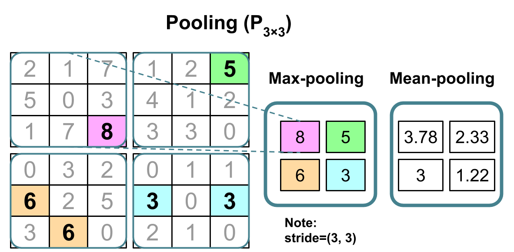

Week 45, Convolutional Neural Networks (CCNs)#
Morten Hjorth-Jensen, Department of Physics, University of Oslo
Date: November 3-7, 2025
Plans for week 45#
Material for the lecture on Monday November 3, 2025.
Convolutional Neural Networks, codes and examples (TensorFlow and Pytorch implementations)
Readings and Videos:
These lecture notes at CompPhysics/MachineLearning
Video of lecture at https://youtu.be/dZt6Vm1wjhs
Whiteboard notes at CompPhysics/MachineLearning
For a more in depth discussion on CNNs we recommend Goodfellow et al chapters 9. See also chapter 11 and 12 on practicalities and applications
Reading suggestions for implementation of CNNs, see Raschka et al chapters 14-15 at rasbt/machine-learning-book.
a. Video on Deep Learning at https://www.youtube.com/playlist?list=PLZHQObOWTQDNU6R1_67000Dx_ZCJB-3pi
Material for the lab sessions#
Discussion of and work on project 2, no exercises this week, only project work
Material for Lecture Monday November 3#
Convolutional Neural Networks (recognizing images), reminder from last week#
Convolutional neural networks (CNNs) were developed during the last decade of the previous century, with a focus on character recognition tasks. Nowadays, CNNs are a central element in the spectacular success of deep learning methods. The success in for example image classifications have made them a central tool for most machine learning practitioners.
CNNs are very similar to ordinary Neural Networks. They are made up of neurons that have learnable weights and biases. Each neuron receives some inputs, performs a dot product and optionally follows it with a non-linearity. The whole network still expresses a single differentiable score function: from the raw image pixels on one end to class scores at the other. And they still have a loss function (for example Softmax) on the last (fully-connected) layer and all the tips/tricks we developed for learning regular Neural Networks still apply (back propagation, gradient descent etc etc).
What is the Difference#
CNN architectures make the explicit assumption that the inputs are images, which allows us to encode certain properties into the architecture. These then make the forward function more efficient to implement and vastly reduce the amount of parameters in the network.
Neural Networks vs CNNs#
Neural networks are defined as affine transformations, that is a vector is received as input and is multiplied with a matrix of so-called weights (our unknown paramters) to produce an output (to which a bias vector is usually added before passing the result through a nonlinear activation function). This is applicable to any type of input, be it an image, a sound clip or an unordered collection of features: whatever their dimensionality, their representation can always be flattened into a vector before the transformation.
Why CNNS for images, sound files, medical images from CT scans etc?#
However, when we consider images, sound clips and many other similar kinds of data, these data have an intrinsic structure. More formally, they share these important properties:
They are stored as multi-dimensional arrays (think of the pixels of a figure) .
They feature one or more axes for which ordering matters (e.g., width and height axes for an image, time axis for a sound clip).
One axis, called the channel axis, is used to access different views of the data (e.g., the red, green and blue channels of a color image, or the left and right channels of a stereo audio track).
These properties are not exploited when an affine transformation is applied; in fact, all the axes are treated in the same way and the topological information is not taken into account. Still, taking advantage of the implicit structure of the data may prove very handy in solving some tasks, like computer vision and speech recognition, and in these cases it would be best to preserve it. This is where discrete convolutions come into play.
A discrete convolution is a linear transformation that preserves this notion of ordering. It is sparse (only a few input units contribute to a given output unit) and reuses parameters (the same weights are applied to multiple locations in the input).
Regular NNs don’t scale well to full images#
As an example, consider an image of size \(32\times 32\times 3\) (32 wide, 32 high, 3 color channels), so a single fully-connected neuron in a first hidden layer of a regular Neural Network would have \(32\times 32\times 3 = 3072\) weights. This amount still seems manageable, but clearly this fully-connected structure does not scale to larger images. For example, an image of more respectable size, say \(200\times 200\times 3\), would lead to neurons that have \(200\times 200\times 3 = 120,000\) weights.
We could have several such neurons, and the parameters would add up quickly! Clearly, this full connectivity is wasteful and the huge number of parameters would quickly lead to possible overfitting.

Figure 1: A regular 3-layer Neural Network.
3D volumes of neurons#
Convolutional Neural Networks take advantage of the fact that the input consists of images and they constrain the architecture in a more sensible way.
In particular, unlike a regular Neural Network, the layers of a CNN have neurons arranged in 3 dimensions: width, height, depth. (Note that the word depth here refers to the third dimension of an activation volume, not to the depth of a full Neural Network, which can refer to the total number of layers in a network.)
To understand it better, the above example of an image with an input volume of activations has dimensions \(32\times 32\times 3\) (width, height, depth respectively).
The neurons in a layer will only be connected to a small region of the layer before it, instead of all of the neurons in a fully-connected manner. Moreover, the final output layer could for this specific image have dimensions \(1\times 1 \times 10\), because by the end of the CNN architecture we will reduce the full image into a single vector of class scores, arranged along the depth dimension.

Figure 1: A CNN arranges its neurons in three dimensions (width, height, depth), as visualized in one of the layers. Every layer of a CNN transforms the 3D input volume to a 3D output volume of neuron activations. In this example, the red input layer holds the image, so its width and height would be the dimensions of the image, and the depth would be 3 (Red, Green, Blue channels).
More on Dimensionalities#
In fields like signal processing (and imaging as well), one designs so-called filters. These filters are defined by the convolutions and are often hand-crafted. One may specify filters for smoothing, edge detection, frequency reshaping, and similar operations. However with neural networks the idea is to automatically learn the filters and use many of them in conjunction with non-linear operations (activation functions).
As an example consider a neural network operating on sound sequence data. Assume that we an input vector \(\boldsymbol{x}\) of length \(d=10^6\). We construct then a neural network with onle hidden layer only with \(10^4\) nodes. This means that we will have a weight matrix with \(10^4\times 10^6=10^{10}\) weights to be determined, together with \(10^4\) biases.
Assume furthermore that we have an output layer which is meant to train whether the sound sequence represents a human voice (true) or something else (false). It means that we have only one output node. But since this output node connects to \(10^4\) nodes in the hidden layer, there are in total \(10^4\) weights to be determined for the output layer, plus one bias. In total we have
that is ten billion parameters to determine.
Further remarks#
The main principles that justify convolutions is locality of information and repetion of patterns within the signal. Sound samples of the input in adjacent spots are much more likely to affect each other than those that are very far away. Similarly, sounds are repeated in multiple times in the signal. While slightly simplistic, reasoning about such a sound example demonstrates this. The same principles then apply to images and other similar data.
Layers used to build CNNs#
A simple CNN is a sequence of layers, and every layer of a CNN transforms one volume of activations to another through a differentiable function. We use three main types of layers to build CNN architectures: Convolutional Layer, Pooling Layer, and Fully-Connected Layer (exactly as seen in regular Neural Networks). We will stack these layers to form a full CNN architecture.
A simple CNN for image classification could have the architecture:
INPUT (\(32\times 32 \times 3\)) will hold the raw pixel values of the image, in this case an image of width 32, height 32, and with three color channels R,G,B.
CONV (convolutional )layer will compute the output of neurons that are connected to local regions in the input, each computing a dot product between their weights and a small region they are connected to in the input volume. This may result in volume such as \([32\times 32\times 12]\) if we decided to use 12 filters.
RELU layer will apply an elementwise activation function, such as the \(max(0,x)\) thresholding at zero. This leaves the size of the volume unchanged (\([32\times 32\times 12]\)).
POOL (pooling) layer will perform a downsampling operation along the spatial dimensions (width, height), resulting in volume such as \([16\times 16\times 12]\).
FC (i.e. fully-connected) layer will compute the class scores, resulting in volume of size \([1\times 1\times 10]\), where each of the 10 numbers correspond to a class score, such as among the 10 categories of the MNIST images we considered above . As with ordinary Neural Networks and as the name implies, each neuron in this layer will be connected to all the numbers in the previous volume.
Transforming images#
CNNs transform the original image layer by layer from the original pixel values to the final class scores.
Observe that some layers contain parameters and other don’t. In particular, the CNN layers perform transformations that are a function of not only the activations in the input volume, but also of the parameters (the weights and biases of the neurons). On the other hand, the RELU/POOL layers will implement a fixed function. The parameters in the CONV/FC layers will be trained with gradient descent so that the class scores that the CNN computes are consistent with the labels in the training set for each image.
CNNs in brief#
In summary:
A CNN architecture is in the simplest case a list of Layers that transform the image volume into an output volume (e.g. holding the class scores)
There are a few distinct types of Layers (e.g. CONV/FC/RELU/POOL are by far the most popular)
Each Layer accepts an input 3D volume and transforms it to an output 3D volume through a differentiable function
Each Layer may or may not have parameters (e.g. CONV/FC do, RELU/POOL don’t)
Each Layer may or may not have additional hyperparameters (e.g. CONV/FC/POOL do, RELU doesn’t)
A deep CNN model (From Raschka et al)#

Figure 1: A deep CNN
Key Idea#
A dense neural network is representd by an affine operation (like matrix-matrix multiplication) where all parameters are included.
The key idea in CNNs for say imaging is that in images neighbor pixels tend to be related! So we connect only neighboring neurons in the input instead of connecting all with the first hidden layer.
We say we perform a filtering (convolution is the mathematical operation).
Mathematics of CNNs#
The mathematics of CNNs is based on the mathematical operation of convolution. In mathematics (in particular in functional analysis), convolution is represented by mathematical operations (integration, summation etc) on two functions in order to produce a third function that expresses how the shape of one gets modified by the other. Convolution has a plethora of applications in a variety of disciplines, spanning from statistics to signal processing, computer vision, solutions of differential equations,linear algebra, engineering, and yes, machine learning.
Mathematically, convolution is defined as follows (one-dimensional example): Let us define a continuous function \(y(t)\) given by
where \(x(a)\) represents a so-called input and \(w(t-a)\) is normally called the weight function or kernel.
The above integral is written in a more compact form as
The discretized version reads
Computing the inverse of the above convolution operations is known as deconvolution and the process is commutative.
How can we use this? And what does it mean? Let us study some familiar examples first.
Convolution Examples: Polynomial multiplication#
Our first example is that of a multiplication between two polynomials, which we will rewrite in terms of the mathematics of convolution. In the final stage, since the problem here is a discrete one, we will recast the final expression in terms of a matrix-vector multiplication, where the matrix is a so-called Toeplitz matrix .
Let us look a the following polynomials to second and third order, respectively:
and
The polynomial multiplication gives us a new polynomial of degree \(5\)
Efficient Polynomial Multiplication#
Computing polynomial products can be implemented efficiently if we rewrite the more brute force multiplications using convolution. We note first that the new coefficients are given as
We note that \(\alpha_i=0\) except for \(i\in \left\{0,1,2\right\}\) and \(\beta_i=0\) except for \(i\in\left\{0,1,2,3\right\}\).
We can then rewrite the coefficients \(\delta_j\) using a discrete convolution as
or as a double sum with restriction \(l=i+j\)
Further simplification#
Although we may have redundant operations with some few zeros for \(\beta_i\), we can rewrite the above sum in a more compact way as
where \(m=3\) in our case, the maximum length of the vector \(\alpha\). Note that the vector \(\boldsymbol{\beta}\) has length \(n=4\). Below we will find an even more efficient representation.
A more efficient way of coding the above Convolution#
Since we only have a finite number of \(\alpha\) and \(\beta\) values which are non-zero, we can rewrite the above convolution expressions as a matrix-vector multiplication
Commutative process#
The process is commutative and we can easily see that we can rewrite the multiplication in terms of a matrix holding \(\beta\) and a vector holding \(\alpha\). In this case we have
Note that the use of these matrices is for mathematical purposes only and not implementation purposes. When implementing the above equation we do not encode (and allocate memory) the matrices explicitely. We rather code the convolutions in the minimal memory footprint that they require.
Toeplitz matrices#
The above matrices are examples of so-called Toeplitz matrices. A Toeplitz matrix is a matrix in which each descending diagonal from left to right is constant. For instance the last matrix, which we rewrite as
with elements \(a_{ii}=a_{i+1,j+1}=a_{i-j}\) is an example of a Toeplitz matrix. Such a matrix does not need to be a square matrix. Toeplitz matrices are also closely connected with Fourier series, because the multiplication operator by a trigonometric polynomial, compressed to a finite-dimensional space, can be represented by such a matrix. The example above shows that we can represent linear convolution as multiplication of a Toeplitz matrix by a vector.
Fourier series and Toeplitz matrices#
This is an active and ogoing research area concerning CNNs. The following articles may be of interest
Generalizing the above one-dimensional case#
In order to align the above simple case with the more general convolution cases, we rename \(\boldsymbol{\alpha}\), whose length is \(m=3\), with \(\boldsymbol{w}\). We will interpret \(\boldsymbol{w}\) as a weight/filter function with which we want to perform the convolution with an input variable \(\boldsymbol{x}\) of length \(n\). We will assume always that the filter \(\boldsymbol{w}\) has dimensionality \(m \le n\).
We replace thus \(\boldsymbol{\beta}\) with \(\boldsymbol{x}\) and \(\boldsymbol{\delta}\) with \(\boldsymbol{y}\) and have
where \(m=3\) in our case, the maximum length of the vector \(\boldsymbol{w}\). Here the symbol \(*\) represents the mathematical operation of convolution.
Memory considerations#
This expression leaves us however with some terms with negative indices, for example \(x(-1)\) and \(x(-2)\) which may not be defined. Our vector \(\boldsymbol{x}\) has components \(x(0)\), \(x(1)\), \(x(2)\) and \(x(3)\).
The index \(j\) for \(\boldsymbol{x}\) runs from \(j=0\) to \(j=3\) since \(\boldsymbol{x}\) is meant to represent a third-order polynomial.
Furthermore, the index \(i\) runs from \(i=0\) to \(i=5\) since \(\boldsymbol{y}\) contains the coefficients of a fifth-order polynomial. When \(i=5\) we may also have values of \(x(4)\) and \(x(5)\) which are not defined.
Padding#
The solution to this is what is called padding! We simply define a new vector \(x\) with two added elements set to zero before \(x(0)\) and two new elements after \(x(3)\) set to zero. That is, we augment the length of \(\boldsymbol{x}\) from \(n=4\) to \(n+2P=8\), where \(P=2\) is the padding constant (a new hyperparameter), see discussions below as well.
New vector#
We have a new vector defined as \(x(0)=0\), \(x(1)=0\), \(x(2)=\beta_0\), \(x(3)=\beta_1\), \(x(4)=\beta_2\), \(x(5)=\beta_3\), \(x(6)=0\), and \(x(7)=0\).
We have added four new elements, which are all zero. The benefit is that we can rewrite the equation for \(\boldsymbol{y}\), with \(i=0,1,\dots,5\),
As an example, we have
as before except that we have an additional term \(x(6)w(0)\), which is zero.
Similarly, for the fifth-order term we have
The zeroth-order term is
Rewriting as dot products#
If we now flip the filter/weight vector, with the following term as a typical example
with \(\tilde{w}(0)=w(2)\), \(\tilde{w}(1)=w(1)\), and \(\tilde{w}(2)=w(0)\), we can then rewrite the above sum as a dot product of \(x(i:i+(m-1))\tilde{w}\) for element \(y(i)\), where \(x(i:i+(m-1))\) is simply a patch of \(\boldsymbol{x}\) of size \(m-1\).
The padding \(P\) we have introduced for the convolution stage is just another hyperparameter which is introduced as part of the architecture. Similarly, below we will also introduce another hyperparameter called Stride \(S\).
Cross correlation#
In essentially all applications one uses what is called cross correlation instead of the standard convolution described above. This means that multiplication is performed in the same direction and instead of the general expression we have discussed above (with infinite sums)
we have now
Both TensorFlow and PyTorch (as well as our own code example below), implement the last equation, although it is normally referred to as convolution. The same padding rules and stride rules discussed below apply to this expression as well.
We leave it as an exercise for you to convince yourself that the example we have discussed till now, gives the same final expression using the last expression.
Two-dimensional objects#
We are now ready to start studying the discrete convolutions relevant for convolutional neural networks. We often use convolutions over more than one dimension at a time. If we have a two-dimensional image \(X\) as input, we can have a filter defined by a two-dimensional kernel/weight/filter \(W\). This leads to an output \(Y\)
Convolution is a commutative process, which means we can rewrite this equation as
Normally the latter is more straightforward to implement in a machine larning library since there is less variation in the range of values of \(m\) and \(n\).
As mentioned above, most deep learning libraries implement cross-correlation instead of convolution (although it is referred to as convolution)
CNNs in more detail, simple example#
Let assume we have an input matrix \(X\) of dimensionality \(3\times 3\) and a \(2\times 2\) filter \(W\) given by the following matrices
and
We introduce now the hyperparameter \(S\) stride. Stride represents how the filter \(W\) moves the convolution process on the matrix \(X\). We strongly recommend the repository on Arithmetic of deep learning by Dumoulin and Visin
Here we set the stride equal to \(S=1\), which means that, starting with the element \(x_{00}\), the filter will act on \(2\times 2\) submatrices each time, starting with the upper corner and moving according to the stride value column by column.
Here we perform the operation
and obtain
We can rewrite this operation in terms of a matrix-vector multiplication by defining a new vector where we flatten out the inputs as a vector \(\boldsymbol{X}'\) of length \(9\) and a matrix \(\boldsymbol{W}'\) with dimension \(4\times 9\) as
and the new matrix
We see easily that performing the matrix-vector multiplication \(\boldsymbol{W}'\boldsymbol{X}'\) is the same as the above convolution with stride \(S=1\), that is
is now given by \(\boldsymbol{W}'\boldsymbol{X}'\) which is a vector of length \(4\) instead of the originally resulting \(2\times 2\) output matrix.
The convolution stage#
The convolution stage, where we apply different filters \(\boldsymbol{W}\) in order to reduce the dimensionality of an image, adds, in addition to the weights and biases (to be trained by the back propagation algorithm) that define the filters, two new hyperparameters, the so-called padding \(P\) and the stride \(S\).
Finding the number of parameters#
In the above example we have an input matrix of dimension \(3\times 3\). In general we call the input for an input volume and it is defined by its width \(H_1\), height \(H_1\) and depth \(D_1\). If we have the standard three color channels \(D_1=3\).
The above example has \(W_1=H_1=3\) and \(D_1=1\).
When we introduce the filter we have the following additional hyperparameters
\(K\) the number of filters. It is common to perform the convolution of the input several times since by experience shrinking the input too fast does not work well
\(F\) as the filter’s spatial extent
\(S\) as the stride parameter
\(P\) as the padding parameter
These parameters are defined by the architecture of the network and are not included in the training.
New image (or volume)#
Acting with the filter on the input volume produces an output volume which is defined by its width \(W_2\), its height \(H_2\) and its depth \(D_2\).
These are defined by the following relations
and \(D_2=K\).
Parameters to train, common settings#
With parameter sharing, the convolution involves thus for each filter \(F\times F\times D_1\) weights plus one bias parameter.
In total we have
parameters to train by back propagation.
It is common to let \(K\) come in powers of \(2\), that is \(32\), \(64\), \(128\) etc.
Common settings.
\(\begin{array}{c} F=3 & S=1 & P=1 \end{array}\)
\(\begin{array}{c} F=5 & S=1 & P=2 \end{array}\)
\(\begin{array}{c} F=5 & S=2 & P=\mathrm{open} \end{array}\)
\(\begin{array}{c} F=1 & S=1 & P=0 \end{array}\)
Examples of CNN setups#
Let us assume we have an input volume \(V\) given by an image of dimensionality \(32\times 32 \times 3\), that is three color channels and \(32\times 32\) pixels.
We apply a filter of dimension \(5\times 5\) ten times with stride \(S=1\) and padding \(P=0\).
The output volume is given by \((32-5)/1+1=28\), resulting in ten images of dimensionality \(28\times 28\times 3\).
The total number of parameters to train for each filter is then \(5\times 5\times 3+1\), where the last parameter is the bias. This gives us \(76\) parameters for each filter, leading to a total of \(760\) parameters for the ten filters.
How many parameters will a filter of dimensionality \(3\times 3\) (adding color channels) result in if we produce \(32\) new images? Use \(S=1\) and \(P=0\).
Note that strides constitute a form of subsampling. As an alternative to being interpreted as a measure of how much the kernel/filter is translated, strides can also be viewed as how much of the output is retained. For instance, moving the kernel by hops of two is equivalent to moving the kernel by hops of one but retaining only odd output elements.
Summarizing: Performing a general discrete convolution (From Raschka et al)#

Figure 1: A deep CNN
Pooling#
In addition to discrete convolutions themselves, pooling operations make up another important building block in CNNs. Pooling operations reduce the size of feature maps by using some function to summarize subregions, such as taking the average or the maximum value.
Pooling works by sliding a window across the input and feeding the content of the window to a pooling function. In some sense, pooling works very much like a discrete convolution, but replaces the linear combination described by the kernel with some other function.
Pooling arithmetic#
In a neural network, pooling layers provide invariance to small translations of the input. The most common kind of pooling is max pooling, which consists in splitting the input in (usually non-overlapping) patches and outputting the maximum value of each patch. Other kinds of pooling exist, e.g., mean or average pooling, which all share the same idea of aggregating the input locally by applying a non-linearity to the content of some patches.
Pooling types (From Raschka et al)#

Figure 1: A deep CNN
Building convolutional neural networks using Tensorflow and Keras#
As discussed above, CNNs are neural networks built from the assumption that the inputs to the network are 2D images. This is important because the number of features or pixels in images grows very fast with the image size, and an enormous number of weights and biases are needed in order to build an accurate network.
As before, we still have our input, a hidden layer and an output. What’s novel about convolutional networks are the convolutional and pooling layers stacked in pairs between the input and the hidden layer. In addition, the data is no longer represented as a 2D feature matrix, instead each input is a number of 2D matrices, typically 1 for each color dimension (Red, Green, Blue).
Setting it up#
It means that to represent the entire dataset of images, we require a 4D matrix or tensor. This tensor has the dimensions:
The MNIST dataset again#
The MNIST dataset consists of grayscale images with a pixel size of \(28\times 28\), meaning we require \(28 \times 28 = 724\) weights to each neuron in the first hidden layer.
If we were to analyze images of size \(128\times 128\) we would require \(128 \times 128 = 16384\) weights to each neuron. Even worse if we were dealing with color images, as most images are, we have an image matrix of size \(128\times 128\) for each color dimension (Red, Green, Blue), meaning 3 times the number of weights \(= 49152\) are required for every single neuron in the first hidden layer.
Strong correlations#
Images typically have strong local correlations, meaning that a small part of the image varies little from its neighboring regions. If for example we have an image of a blue car, we can roughly assume that a small blue part of the image is surrounded by other blue regions.
Therefore, instead of connecting every single pixel to a neuron in the first hidden layer, as we have previously done with deep neural networks, we can instead connect each neuron to a small part of the image (in all 3 RGB depth dimensions). The size of each small area is fixed, and known as a receptive.
Layers of a CNN#
The layers of a convolutional neural network arrange neurons in 3D: width, height and depth.
The input image is typically a square matrix of depth 3.
A convolution is performed on the image which outputs a 3D volume of neurons. The weights to the input are arranged in a number of 2D matrices, known as filters.
Each filter slides along the input image, taking the dot product between each small part of the image and the filter, in all depth dimensions. This is then passed through a non-linear function, typically the Rectified Linear (ReLu) function, which serves as the activation of the neurons in the first convolutional layer. This is further passed through a pooling layer, which reduces the size of the convolutional layer, e.g. by taking the maximum or average across some small regions, and this serves as input to the next convolutional layer.
Systematic reduction#
By systematically reducing the size of the input volume, through convolution and pooling, the network should create representations of small parts of the input, and then from them assemble representations of larger areas. The final pooling layer is flattened to serve as input to a hidden layer, such that each neuron in the final pooling layer is connected to every single neuron in the hidden layer. This then serves as input to the output layer, e.g. a softmax output for classification.
Prerequisites: Collect and pre-process data#
%matplotlib inline
# import necessary packages
import numpy as np
import matplotlib.pyplot as plt
from sklearn import datasets
# ensure the same random numbers appear every time
np.random.seed(0)
# display images in notebook
%matplotlib inline
plt.rcParams['figure.figsize'] = (12,12)
# download MNIST dataset
digits = datasets.load_digits()
# define inputs and labels
inputs = digits.images
labels = digits.target
# RGB images have a depth of 3
# our images are grayscale so they should have a depth of 1
inputs = inputs[:,:,:,np.newaxis]
print("inputs = (n_inputs, pixel_width, pixel_height, depth) = " + str(inputs.shape))
print("labels = (n_inputs) = " + str(labels.shape))
# choose some random images to display
n_inputs = len(inputs)
indices = np.arange(n_inputs)
random_indices = np.random.choice(indices, size=5)
for i, image in enumerate(digits.images[random_indices]):
plt.subplot(1, 5, i+1)
plt.axis('off')
plt.imshow(image, cmap=plt.cm.gray_r, interpolation='nearest')
plt.title("Label: %d" % digits.target[random_indices[i]])
plt.show()
Importing Keras and Tensorflow#
from tensorflow.keras import datasets, layers, models
from tensorflow.keras.layers import Input
from tensorflow.keras.models import Sequential #This allows appending layers to existing models
from tensorflow.keras.layers import Dense #This allows defining the characteristics of a particular layer
from tensorflow.keras import optimizers #This allows using whichever optimiser we want (sgd,adam,RMSprop)
from tensorflow.keras import regularizers #This allows using whichever regularizer we want (l1,l2,l1_l2)
from tensorflow.keras.utils import to_categorical #This allows using categorical cross entropy as the cost function
#from tensorflow.keras import Conv2D
#from tensorflow.keras import MaxPooling2D
#from tensorflow.keras import Flatten
from sklearn.model_selection import train_test_split
# representation of labels
labels = to_categorical(labels)
# split into train and test data
# one-liner from scikit-learn library
train_size = 0.8
test_size = 1 - train_size
X_train, X_test, Y_train, Y_test = train_test_split(inputs, labels, train_size=train_size,
test_size=test_size)
Running with Keras#
def create_convolutional_neural_network_keras(input_shape, receptive_field,
n_filters, n_neurons_connected, n_categories,
eta, lmbd):
model = Sequential()
model.add(layers.Conv2D(n_filters, (receptive_field, receptive_field), input_shape=input_shape, padding='same',
activation='relu', kernel_regularizer=regularizers.l2(lmbd)))
model.add(layers.MaxPooling2D(pool_size=(2, 2)))
model.add(layers.Flatten())
model.add(layers.Dense(n_neurons_connected, activation='relu', kernel_regularizer=regularizers.l2(lmbd)))
model.add(layers.Dense(n_categories, activation='softmax', kernel_regularizer=regularizers.l2(lmbd)))
sgd = optimizers.SGD(lr=eta)
model.compile(loss='categorical_crossentropy', optimizer=sgd, metrics=['accuracy'])
return model
epochs = 100
batch_size = 100
input_shape = X_train.shape[1:4]
receptive_field = 3
n_filters = 10
n_neurons_connected = 50
n_categories = 10
eta_vals = np.logspace(-5, 1, 7)
lmbd_vals = np.logspace(-5, 1, 7)
Final part#
CNN_keras = np.zeros((len(eta_vals), len(lmbd_vals)), dtype=object)
for i, eta in enumerate(eta_vals):
for j, lmbd in enumerate(lmbd_vals):
CNN = create_convolutional_neural_network_keras(input_shape, receptive_field,
n_filters, n_neurons_connected, n_categories,
eta, lmbd)
CNN.fit(X_train, Y_train, epochs=epochs, batch_size=batch_size, verbose=0)
scores = CNN.evaluate(X_test, Y_test)
CNN_keras[i][j] = CNN
print("Learning rate = ", eta)
print("Lambda = ", lmbd)
print("Test accuracy: %.3f" % scores[1])
print()
Final visualization#
# visual representation of grid search
# uses seaborn heatmap, could probably do this in matplotlib
import seaborn as sns
sns.set()
train_accuracy = np.zeros((len(eta_vals), len(lmbd_vals)))
test_accuracy = np.zeros((len(eta_vals), len(lmbd_vals)))
for i in range(len(eta_vals)):
for j in range(len(lmbd_vals)):
CNN = CNN_keras[i][j]
train_accuracy[i][j] = CNN.evaluate(X_train, Y_train)[1]
test_accuracy[i][j] = CNN.evaluate(X_test, Y_test)[1]
fig, ax = plt.subplots(figsize = (10, 10))
sns.heatmap(train_accuracy, annot=True, ax=ax, cmap="viridis")
ax.set_title("Training Accuracy")
ax.set_ylabel("$\eta$")
ax.set_xlabel("$\lambda$")
plt.show()
fig, ax = plt.subplots(figsize = (10, 10))
sns.heatmap(test_accuracy, annot=True, ax=ax, cmap="viridis")
ax.set_title("Test Accuracy")
ax.set_ylabel("$\eta$")
ax.set_xlabel("$\lambda$")
plt.show()
The CIFAR01 data set#
The CIFAR10 dataset contains 60,000 color images in 10 classes, with 6,000 images in each class. The dataset is divided into 50,000 training images and 10,000 testing images. The classes are mutually exclusive and there is no overlap between them.
import tensorflow as tf
from tensorflow.keras import datasets, layers, models
import matplotlib.pyplot as plt
# We import the data set
(train_images, train_labels), (test_images, test_labels) = datasets.cifar10.load_data()
# Normalize pixel values to be between 0 and 1 by dividing by 255.
train_images, test_images = train_images / 255.0, test_images / 255.0
Verifying the data set#
To verify that the dataset looks correct, let’s plot the first 25 images from the training set and display the class name below each image.
class_names = ['airplane', 'automobile', 'bird', 'cat', 'deer',
'dog', 'frog', 'horse', 'ship', 'truck']
plt.figure(figsize=(10,10))
for i in range(25):
plt.subplot(5,5,i+1)
plt.xticks([])
plt.yticks([])
plt.grid(False)
plt.imshow(train_images[i], cmap=plt.cm.binary)
# The CIFAR labels happen to be arrays,
# which is why you need the extra index
plt.xlabel(class_names[train_labels[i][0]])
plt.show()
Set up the model#
The 6 lines of code below define the convolutional base using a common pattern: a stack of Conv2D and MaxPooling2D layers.
As input, a CNN takes tensors of shape (image_height, image_width, color_channels), ignoring the batch size. If you are new to these dimensions, color_channels refers to (R,G,B). In this example, you will configure our CNN to process inputs of shape (32, 32, 3), which is the format of CIFAR images. You can do this by passing the argument input_shape to our first layer.
model = models.Sequential()
model.add(layers.Conv2D(32, (3, 3), activation='relu', input_shape=(32, 32, 3)))
model.add(layers.MaxPooling2D((2, 2)))
model.add(layers.Conv2D(64, (3, 3), activation='relu'))
model.add(layers.MaxPooling2D((2, 2)))
model.add(layers.Conv2D(64, (3, 3), activation='relu'))
# Let's display the architecture of our model so far.
model.summary()
You can see that the output of every Conv2D and MaxPooling2D layer is a 3D tensor of shape (height, width, channels). The width and height dimensions tend to shrink as you go deeper in the network. The number of output channels for each Conv2D layer is controlled by the first argument (e.g., 32 or 64). Typically, as the width and height shrink, you can afford (computationally) to add more output channels in each Conv2D layer.
Add Dense layers on top#
To complete our model, you will feed the last output tensor from the convolutional base (of shape (4, 4, 64)) into one or more Dense layers to perform classification. Dense layers take vectors as input (which are 1D), while the current output is a 3D tensor. First, you will flatten (or unroll) the 3D output to 1D, then add one or more Dense layers on top. CIFAR has 10 output classes, so you use a final Dense layer with 10 outputs and a softmax activation.
model.add(layers.Flatten())
model.add(layers.Dense(64, activation='relu'))
model.add(layers.Dense(10))
Here's the complete architecture of our model.
model.summary()
As you can see, our (4, 4, 64) outputs were flattened into vectors of shape (1024) before going through two Dense layers.
Compile and train the model#
model.compile(optimizer='adam',
loss=tf.keras.losses.SparseCategoricalCrossentropy(from_logits=True),
metrics=['accuracy'])
history = model.fit(train_images, train_labels, epochs=10,
validation_data=(test_images, test_labels))
Finally, evaluate the model#
plt.plot(history.history['accuracy'], label='accuracy')
plt.plot(history.history['val_accuracy'], label = 'val_accuracy')
plt.xlabel('Epoch')
plt.ylabel('Accuracy')
plt.ylim([0.5, 1])
plt.legend(loc='lower right')
test_loss, test_acc = model.evaluate(test_images, test_labels, verbose=2)
print(test_acc)
Building code using Pytorch#
This code loads and normalizes the MNIST dataset. Thereafter it defines a CNN architecture with:
Two convolutional layers
Max pooling
Dropout for regularization
Two fully connected layers
It uses the Adam optimizer and for cost function it employs the Cross-Entropy function. It trains for 10 epochs. You can modify the architecture (number of layers, channels, dropout rate) or training parameters (learning rate, batch size, epochs) to experiment with different configurations.
import torch
import torch.nn as nn
import torch.nn.functional as F
import torch.optim as optim
from torchvision import datasets, transforms
# Set device
device = torch.device("cuda" if torch.cuda.is_available() else "cpu")
# Define transforms
transform = transforms.Compose([
transforms.ToTensor(),
transforms.Normalize((0.1307,), (0.3081,))
])
# Load datasets
train_dataset = datasets.MNIST(root='./data', train=True, download=True, transform=transform)
test_dataset = datasets.MNIST(root='./data', train=False, download=True, transform=transform)
# Create data loaders
train_loader = torch.utils.data.DataLoader(train_dataset, batch_size=64, shuffle=True)
test_loader = torch.utils.data.DataLoader(test_dataset, batch_size=64, shuffle=False)
# Define CNN model
class CNN(nn.Module):
def __init__(self):
super(CNN, self).__init__()
self.conv1 = nn.Conv2d(1, 32, 3, padding=1)
self.conv2 = nn.Conv2d(32, 64, 3, padding=1)
self.pool = nn.MaxPool2d(2, 2)
self.fc1 = nn.Linear(64*7*7, 1024)
self.fc2 = nn.Linear(1024, 10)
self.dropout = nn.Dropout(0.5)
def forward(self, x):
x = self.pool(F.relu(self.conv1(x)))
x = self.pool(F.relu(self.conv2(x)))
x = x.view(-1, 64*7*7)
x = self.dropout(F.relu(self.fc1(x)))
x = self.fc2(x)
return x
# Initialize model, loss function, and optimizer
model = CNN().to(device)
criterion = nn.CrossEntropyLoss()
optimizer = optim.Adam(model.parameters(), lr=0.001)
# Training loop
num_epochs = 10
for epoch in range(num_epochs):
model.train()
running_loss = 0.0
for batch_idx, (data, target) in enumerate(train_loader):
data, target = data.to(device), target.to(device)
optimizer.zero_grad()
outputs = model(data)
loss = criterion(outputs, target)
loss.backward()
optimizer.step()
running_loss += loss.item()
print(f'Epoch [{epoch+1}/{num_epochs}], Loss: {running_loss/len(train_loader):.4f}')
# Testing the model
model.eval()
correct = 0
total = 0
with torch.no_grad():
for data, target in test_loader:
data, target = data.to(device), target.to(device)
outputs = model(data)
_, predicted = torch.max(outputs.data, 1)
total += target.size(0)
correct += (predicted == target).sum().item()
print(f'Test Accuracy: {100 * correct / total:.2f}%')